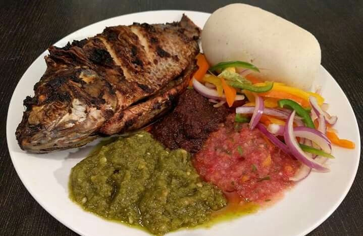
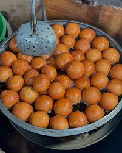

Popular Dishes
Main
Jollof Rice
Ghana's iconic one-pot rice dish cooked with tomatoes, onions, and aromatic spices. A staple at celebrations and everyday meals.

Main
Banku & Tilapia
Fermented corn and cassava dumpling served with grilled tilapia and spicy pepper sauce. A coastal favorite.
Street Food
Kelewele
Spiced and fried plantain cubes seasoned with ginger, pepper, and aromatic spices. The perfect street food snack.

Main
Waakye
Rice and beans cooked with millet leaves, served with various accompaniments. A nutritious and filling meal.
Traditional
Fufu & Light Soup
Pounded cassava and plantain served with aromatic light soup containing meat, fish, and vegetables.

Snack
Bofrot
Sweet, fluffy Ghanaian donuts perfect for breakfast or as a snack. Often enjoyed with tea or coffee.